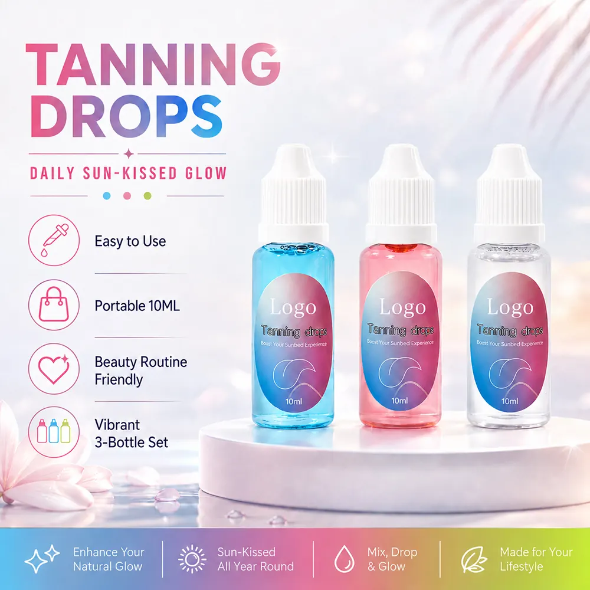

Tanning • Private Label Product
Private Label Oral Tan Drops
Private Label Oral Tan Drops are designed for beauty brands looking to expand their self tanning product line. Featuring a portable 10ml dropper bottle, this OEM/ODM tanning solution supports a natural sun-kissed glow concept while offering custom formulas, flavors, labels, packaging and private label branding for global beauty brands.
Fast
Response
Response
Quality
Assurance
Assurance
OEM/ODM
Support
Support
Global
Shipping
Shipping
HighlightsIngredientsCustomizationFAQRelated Products
Product Highlights
Key Selling Points
Formula Reference
Key Ingredients
| Ingredient |
|---|
| Aqua |
| Permatan Complex |
| Natural Flavours |
| Preservative |
B2B Customization
OEM / ODM Customization
Custom FormulaCustom Scent / FlavorCustom Bottle / Tube / JarCustom LabelCustom BoxCustom Size / VolumeMOQ: 50 pcsLead Time: 7-10 Working Days
Product FAQ
Questions About Private Label Oral Tan Drops
Can I get free samples before bulk order?
Yes. Free samples are available for quality checking. Buyers only need to pay the shipping cost.
Can you customize the formula and fragrance?
Yes. We support custom formula, texture, color, fragrance, and skincare functions based on your needs.
Can I customize the label and packaging?
Yes. We offer private label service, including custom logo, label, bottle, jar, tube, box, and outer packaging.
What are tanning drops used for?
Tanning drops are beauty products designed to help users achieve a natural sun-kissed glow. They are commonly used as part of a daily tanning, skincare, or beauty routine by people who want a warmer, summer-inspired skin appearance.
Who are 10ml tanning drops suitable for?
10ml tanning drops are suitable for users who want a portable and easy-to-use tanning product. They are especially suitable for beauty lovers, travelers, beachgoers, and people who prefer compact skincare or tanning products.
Related Products
Build A Complete Product Line


Request A Quote For Private Label Oral Tan Drops
Send us your target market, quantity, formula requirements and packaging idea. We will reply with a practical OEM/ODM solution.